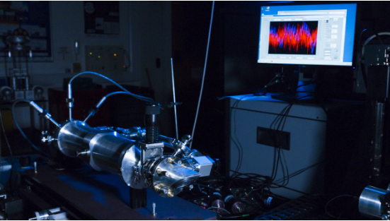

NPL's cryogenic radiometer
NPL's cryogenic radiometer is the primary standard for the
measurement of optical radiant power. It uses the electrical substitution technique, whereby the
optical power incident on an absorbing cavity is compared with the electrical power required to heat
the cavity to the same temperature. For the optical input NPL uses a Krypton Ion tuneable laser
producingbeams of radiation at single wavelengths that are focused to under-fill the cryogenic
radiometer’s aperture. High Tc superconducting leads to the cavity heater ensure true equivalence of
electrical and optical power.
The cavity is made of electroformed copper to reduce its mass and is coated internally with NPL super black. The design of the cavity in combination with operation at helium temperatures ensures an optimal response to incoming radiation. The cavity is isolated from fluctuations in the cold head of the cooler by a reference block maintained at a constant temperature. The accuracy of the system is further enhanced by operating the cavity within an isothermal shield.